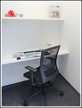
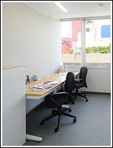
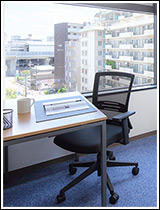
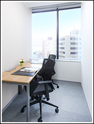
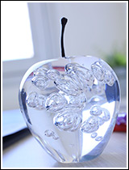
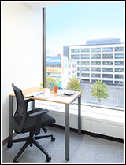
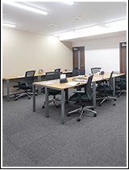
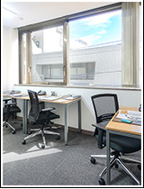

一坪オフィス実験｜個室のレンタルオフィスならOpenoffice：東京・大阪をはじめ全国に50拠点以上
- 【個室レンタルオフィス】オープンオフィス HOME
- オープンオフィスとは？
- 一坪オフィス実験
オープンオフィスとは？
- ■成功する起業家の条件：創業資金の有効活用
- ■起業時の【軍資金】がいかに大切か
- ■オープンオフィスの『保証金制度』
- ■オープンオフィスの『無人運営』とは？
- ■一坪オフィス実験
- ■立地・デザインについて
- ■共益費って？
- ■何も買う必要がない！
- ■オープンオフィスで過ごす「あなたの一日」
一坪オフィス実験
一人当たり、「どれくらいの広さ」があればいいんだろう？
「一人当たり、一坪あれば充分。」 という結論に至りました。
ちょっと考えてみてください。
独立する前に勤めていた会社から与えられたワークスペースはどれくらいだったでしょうか？
机一つと椅子一つ、オフィスはそれらのセットが島型に規則的に並べられていたのではないでしょうか？
手を伸ばせば届く範囲に隣人がいた、それ位のスペースだったハズです。
一人で仕事をするなら、そのスペースで「十分」です。
私もお客様におススメする商品ですから、必要十分な広さを検証する為に、自らが実験体となりました。
３年間、1.8m×1.8m（一坪） の部屋で仕事をしましたが、この大きさで充分でした。
全く支障はありませんでした。
実際、大きな会社でも一人一人に与えられているデスクスペースはこれ位です。
オープンオフィスでは、単にワークスペースをお貸ししているのではありません。
「お客様を迎えるエントランス」や「商談室」、「コピー機」や「プリンター」のある場所は、しっかりと別に確保されているのです。
トイレや会議室やコピールームなどは、自分の部屋以外の場所に完備されています。
ですから、お部屋は純粋にデスクスペースとしてだけで使えます。
ワンルームマンションや通常の賃貸オフィスではこうはいきません。
トイレや共用部（ワンルームでは使いもしないお風呂の面積にも）などのデスクスペースではない部分の利用料も支払わなければなりません。
それはムダとしか思えません。
だから、ワークスペースだけだと一坪で十分なのです。
オフィスを選ぶ時、確かに広い方が心地はいいです。大は小を兼ねるとも言えるでしょう。
しかし、広ければ、当然、その分コストは高くなります。
私達は、何が起こるか分からない起業時においては、特に、スペースの広さよりも資金を大切にして欲しいと考えています。
オープンオフィスは一坪だけのオフィスがあるわけではありません。
色々な大きさのお部屋を用意しています。
しかし、必要最小限のお部屋を優先的におススメしますし、必要最小限のお部屋をこれからもつくっていきます。
オープンオフィスは通常のオフィスと違い、移転も自由に出来ますから、余裕が出てきたら広いスペースに移ることもできます。
小さく始めて、大きく伸ばす。
これがビジネスの鉄則です。
だから、オフィスの広さにあまりこだわらない方が成功すると私達は考えています。







